Webhook Ingestion
Receives security alerts through an n8n production webhook and passes each event into the automation pipeline.
SECURITY AUTOMATION • N8N • SPLUNK • WEBHOOKS • SOAR
I designed and implemented an end-to-end security automation workflow that receives security alerts through a webhook, normalizes and validates incoming data, routes incidents by severity, enriches alerts with analyst-ready context, and forwards structured incidents to Splunk for centralized investigation. The project also includes response validation, failure handling, end-to-end testing, and documented network troubleshooting.
Receives security alerts through an n8n production webhook and passes each event into the automation pipeline.
Standardizes severity values and rejects malformed or unsupported alerts before response logic runs.
Routes HIGH, MEDIUM, and LOW incidents into dedicated triage branches.
Adds incident IDs, timestamps, host and user context, MITRE ATT&CK information, response actions, and analyst notes.
Forwards structured incidents to Splunk through the HTTP Event Collector for centralized security visibility.
Checks Splunk responses and directs failed deliveries into a shared automation-failure handling path.
AUTOMATION ARCHITECTURE
The workflow was designed as a complete alert-processing pipeline rather than a single one-off action.
Security Alert
|
v
+----------------------+
| Webhook |
+----------------------+
|
v
+----------------------+
| Normalize Alert |
+----------------------+
|
v
+----------------------+
| Validate Alert |
+----------------------+
|
+-------------------------> Invalid Alert
| |
| v
| Failure Handling
|
v
+----------------------+
| Severity Router |
+----------------------+
|
+-------------------+-------------------+
| | |
v v v
HIGH MEDIUM LOW
| | |
v v v
Escalate Review Log
Incident Incident Incident
| | |
v v v
Format High Format Medium Format Normal
| | |
+-------------------+-------------------+
|
v
Splunk HEC Forwarding
|
v
Validate HEC Response
|
+------+------+
| |
v v
Success Failure
|
v
Log Automation Failure
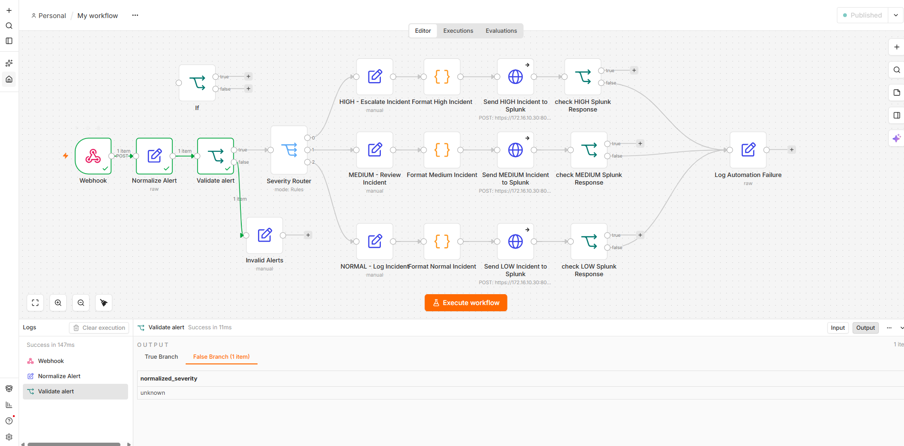
ALERT INGESTION
The workflow begins with an n8n webhook that receives security alert data and passes it into the automation pipeline.
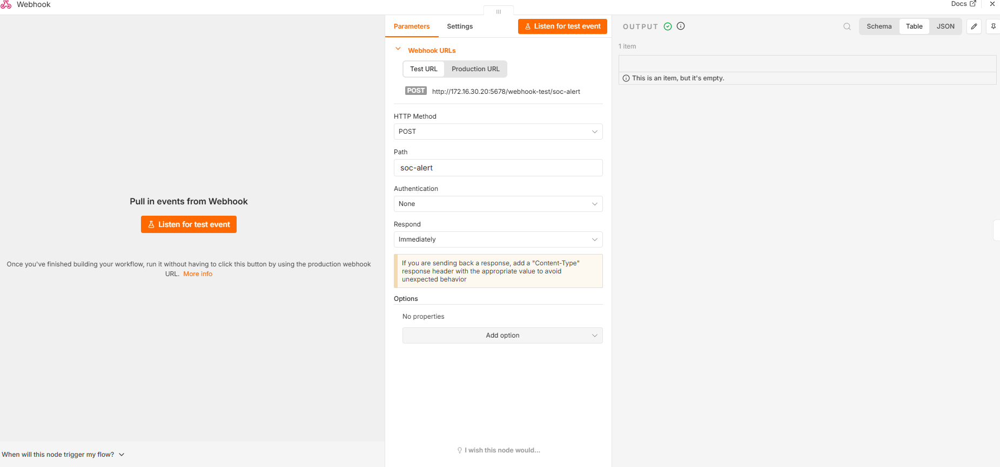
DATA PROCESSING
Incoming severity values are standardized before routing so differences in capitalization, whitespace, or JSON structure do not break downstream logic.
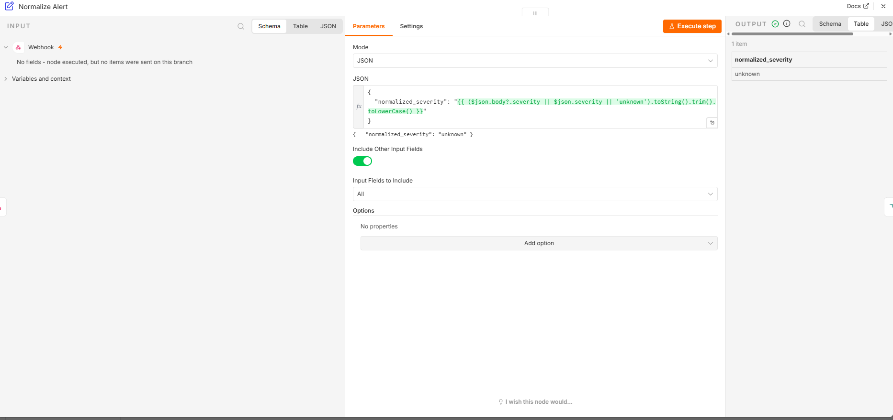
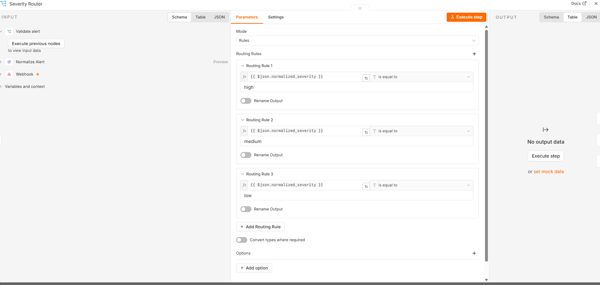
TRIAGE LOGIC
Supported alerts are routed by normalized severity. Unsupported values are separated into an invalid-alert path instead of silently continuing.
Immediate escalation with an immediate_review response action.
Analyst review path with analyst_review response handling.
Logging and monitoring using log_and_monitor.
Malformed or unsupported severity values are rejected and handled separately.
HIGH-SEVERITY RESPONSE
High-severity alerts are automatically escalated, enriched, formatted, forwarded to Splunk, and checked for a successful HEC response.
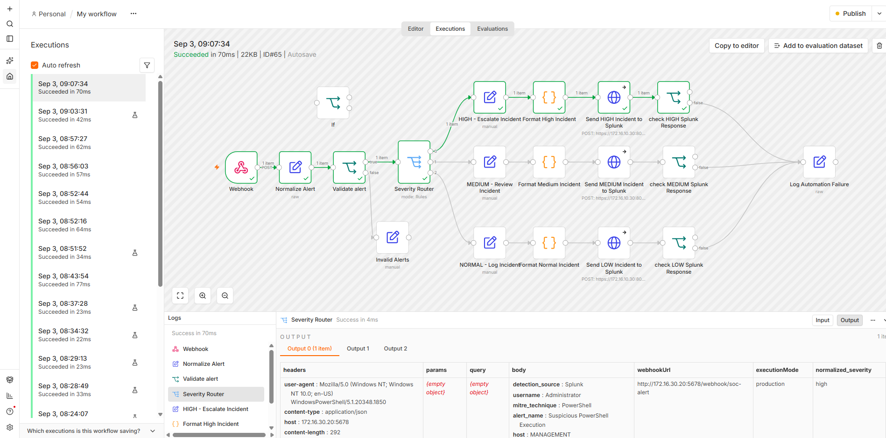
SEVERITY-SPECIFIC ACTIONS
Different severity levels receive different response actions instead of being treated identically.
Medium incidents are marked for analyst review and assigned a review-oriented response action.
Low incidents are recorded for visibility and monitoring without unnecessary escalation.
Each branch produces a structured event before sending it to Splunk.
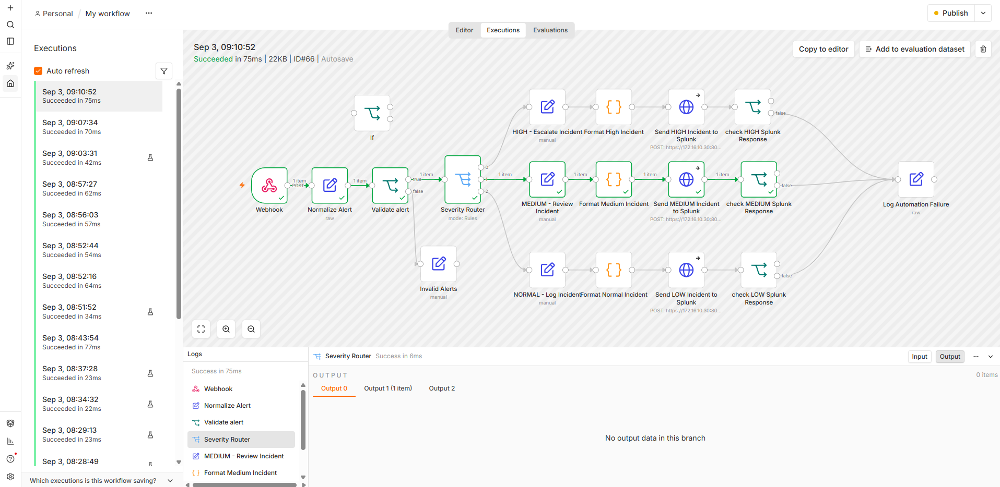
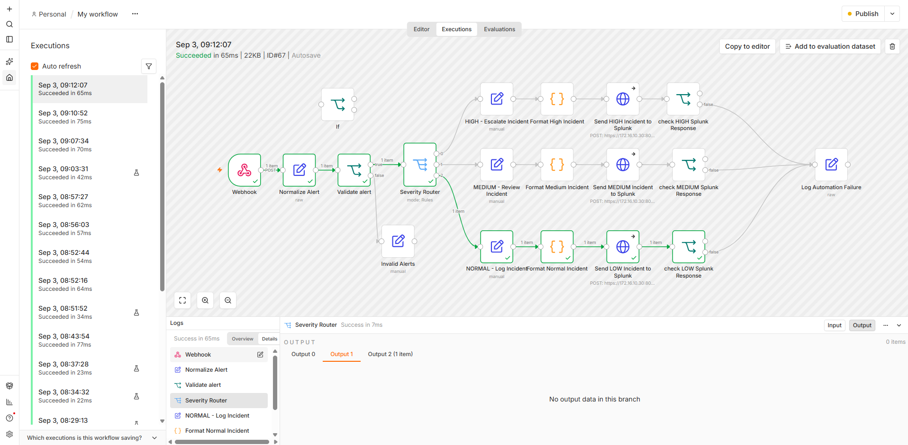
INCIDENT ENRICHMENT
The workflow adds structured security and response context before an incident reaches Splunk.
Incident ID, creation time, alert name, host, username, source IP, and severity.
Tactic and technique fields connect alerts to a recognized security framework.
Escalation state, response action, detection source, and analyst notes are added.
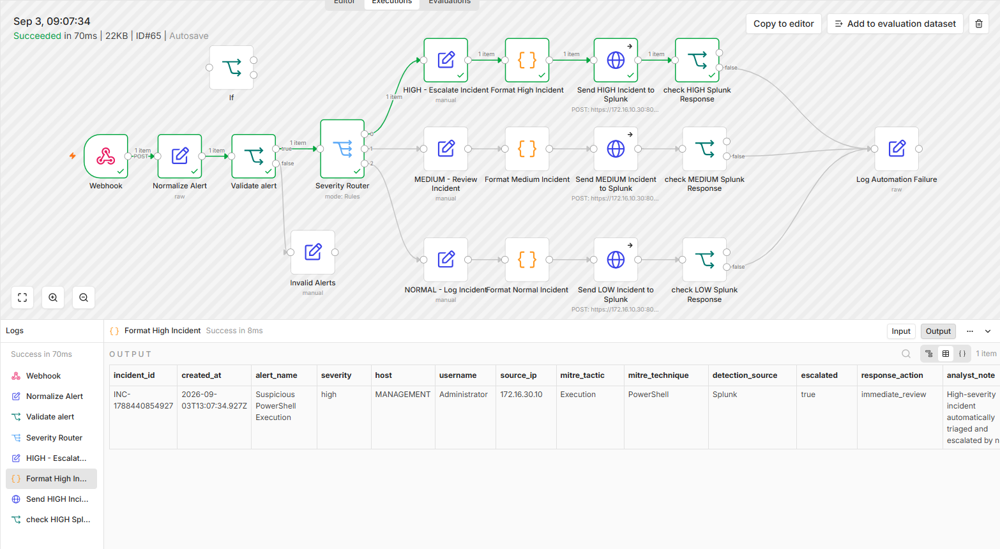
SIEM INTEGRATION
Structured incidents are forwarded from n8n to Splunk using HEC. The workflow then checks the Splunk response to confirm successful ingestion.
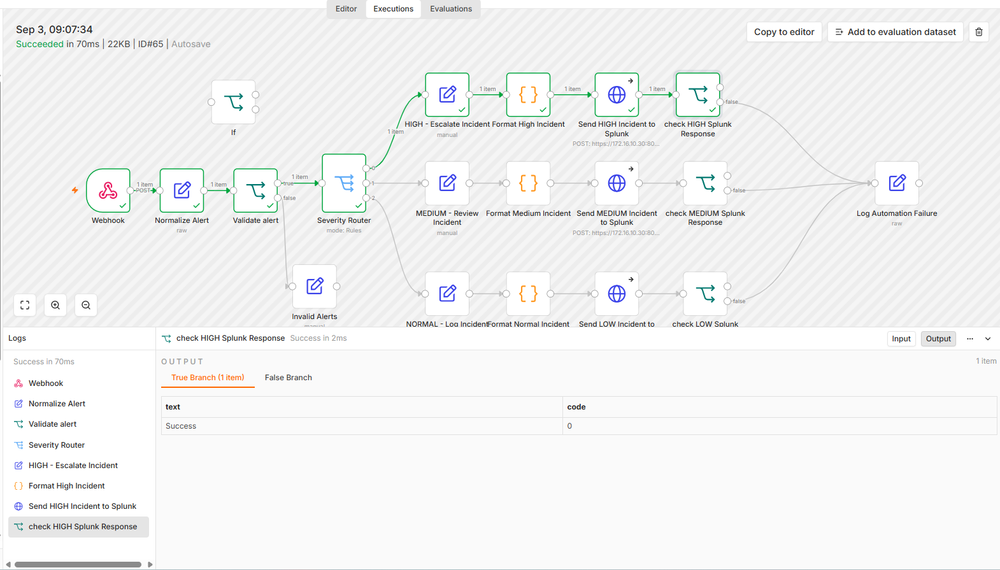
CENTRALIZED VISIBILITY
End-to-end tests confirmed that incidents from all three severity branches reached the dedicated Splunk index with the expected enriched fields.
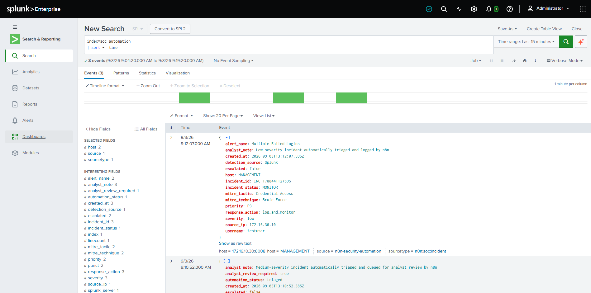
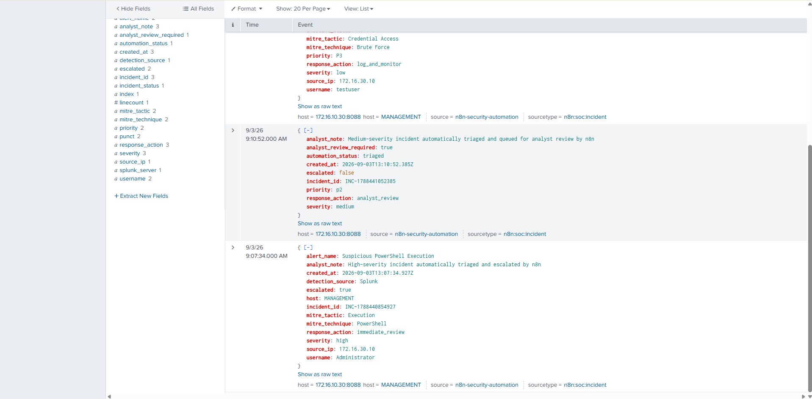
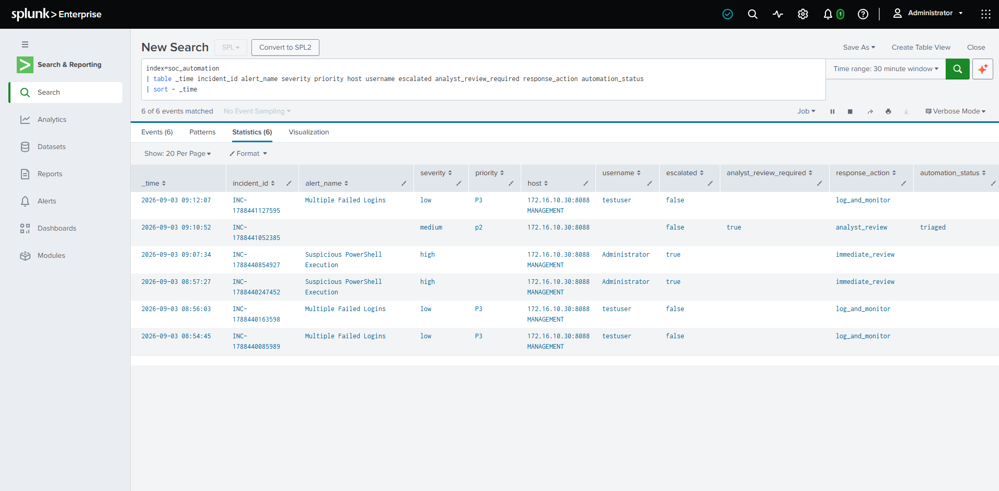
RESILIENCY
The workflow validates HEC responses and routes failed deliveries into a shared failure path instead of assuming every HTTP request succeeded.
Each severity branch validates the Splunk response after the HTTP request.
Failed ingestion attempts are routed into the common Log Automation Failure node.
Connection failures were observed during troubleshooting and used to validate workflow behavior.
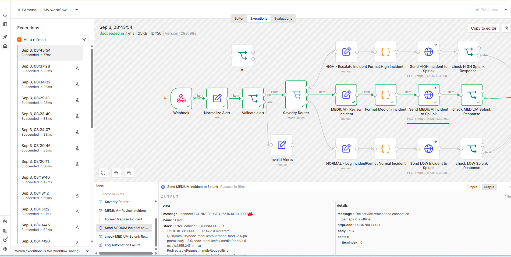
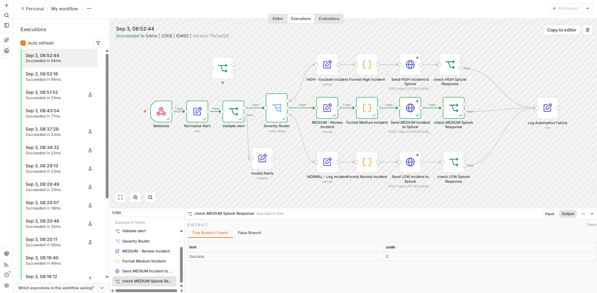
ENGINEERING TROUBLESHOOTING
AUTOMATION01 could reach its local management gateway but could not reach Splunk across the routed network. The actual cause was a duplicate IP conflict on the management network rather than a pfSense routing failure.
n8n HEC requests timed out even though the automation host had a valid default route.
The ARP neighbor entry for the gateway showed an unexpected VMware MAC address.
A Windows VMware host-only adapter also used 172.16.30.1, conflicting with pfSense MANAGEMENT.
The conflicting host adapter address was corrected and the ARP cache was flushed.
The gateway MAC changed to pfSense and cross-subnet connectivity to Splunk was restored.
After network recovery and HEC authorization correction, HIGH, MEDIUM, and LOW incidents completed end to end.
PASS
Security alerts successfully entered the n8n workflow.
PASS
Severity values were standardized for downstream logic.
PASS
Unsupported values were separated from valid incidents.
PASS
HIGH, MEDIUM, and LOW alerts followed the correct branches.
PASS
Structured incidents were successfully delivered to Splunk.
OPERATIONAL
All three severity paths completed successfully.
This project demonstrates a complete alert-processing workflow from ingestion through automated triage, enrichment, SIEM delivery, response validation, failure handling, and network troubleshooting.